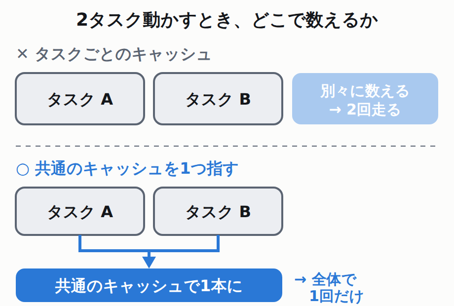

Answer questions about your code and GitHub activity.
Triage bug reports, update existing issues, or create and label new issues.
Investigate failures, implement changes, and validate its work in a secure cloud sandbox.
Open a pull request and provide a link to the conversation for review.
use Illuminate\Contracts\Queue\ShouldQueue;
use Illuminate\Queue\Attributes\DebounceFor;
#[DebounceFor(30)]
class UpdateProductSearchIndex implements ShouldQueue
{
public function handle(ProductUpdated $event): void
{
// 検索インデックスの更新…
}
public function debounceId(ProductUpdated $event): string
{
return (string) $event->product->getKey();
}
}
「何回目か」を数えているのはキャッシュです。ECS on Fargate は同じコンテナを複数動かす仕組みなので、キャッシュがコンテナごとに分かれていると、それぞれが別々に数えてしまいます。

まとめる相手が見えていないと、まとまらない
公式ドキュメントもこれを条件として書いています。
laravel.com/docs/13.x/events の原文
If your application dispatches events from multiple web servers or containers, you should ensure that all of your servers are communicating with the same central cache server.
Over the coming year, an increasing number of manufacturers will leverage the Android per-app memory limits across their portfolio of device RAM configurations from 4GB to 16GB+ devices. If your app exceeds these limits, it will be slowed down and may be terminated.
Experiments across two model families and five representative memory frameworks show that MemTrapBench is challenging: all evaluated memory strategies underperform the no-memory setting, with even the strongest methods suffering drops of more than 10%.
DeepSeek の API は8月16日から時間帯によって単価が変わる方式になっていて、オフピークはピークのちょうど半額です。そのルールが今日から変わりました。
公式の料金ページ・脚注(1) の原文
Effective 00:00 (Beijing Time) on Sunday, August 23, 2026, we will adjust our peak/off-peak billing rules, with off-peak rates applying throughout the day on weekends (Saturdays and Sundays, Beijing Time).
OpenRouter will continue to operate as it is: same mission, same name, same product, same roadmap. If you build on OpenRouter today, nothing about your integration changes.
一次資料
Laravel「Events — Debounced Event Listeners」laravel.com/docs 13.x.
参照箇所を見る参照箇所: 「Debounced Event Listeners」節。#[DebounceFor(30)] と debounceId のコード例、maxWait の例、debounceVia の例、および「Debounced listeners and unique listeners are mutually exclusive. A listener using the DebounceFor attribute should not implement ShouldBeUnique.」「If your application dispatches events from multiple web servers or containers, you should ensure that all of your servers are communicating with the same central cache server.」。記事のコード例はこの節のものを使い、<?php・namespace・use App\Events\ProductUpdated; の3行を省いてコメントを日本語にした（そのまま貼っても ProductUpdated は解決しないので、実際に使うときは省いた行を戻すこと）。https://laravel.com/docs/13.x/events（2026年8月23日参照）
一次資料
GitHub「The new GitHub Copilot experience in Slack」GitHub Changelog, 2026年8月21日（日本時間8月22日1:07）.
参照箇所を見る参照箇所: 「Availability and getting started」節の「The public preview is available to organizations on GitHub Copilot Business and GitHub Copilot Enterprise plans. Usage counts against your existing Copilot entitlements and can be managed with existing Copilot cloud agent budgets.」「Make sure an administrator has enabled the Copilot cloud agent policy for your organization.」、および「Repository administrators can require an additional approval for any pull request attributed to the Copilot app identity before it can merge.」。本文に貼った4行は「What you can now do with @GitHub」節の箇条書きの原文。公開時刻はGitHub Changelogのフィード(github.blog/changelog/feed/)のpubDateをJSTに直して確認した。https://github.blog/changelog/2026-08-21-the-new-github-copilot-experience-in-slack/（2026年8月23日参照）
一次資料
AWS「Amazon Bedrock announces reduced pricing for OpenAI GPT-5.6 Sol」AWS What's New, 2026年8月21日（日本時間8月22日5:11）.
参照箇所を見る参照箇所: 「Sol now costs $4 per million input tokens and $20 per million output tokens—20% lower input pricing and 33.3% lower output pricing. This promotional pricing is available at least through November 21, 2026.」。同じ数値を OpenAI 側の changelog（Aug 21, Model: gpt-5.6-sol）でも突き合わせた: 「GPT-5.6 Sol now costs $4 per million input tokens and $20 per million output tokens, representing 20% lower input pricing and 33% lower output pricing. GPT-5.6 Sol's promotional pricing is available at least through November 21, 2026.」。下げ幅の表記が AWS は 33.3%、OpenAI は 33% と分かれているため、記事では出力側を 33.3% と書き、出典を AWS 側にそろえた。https://aws.amazon.com/about-aws/whats-new/2026/08/bedrock-openai-gpt-56-sol-reduced-pricing/（2026年8月23日参照）
一次資料
OpenAI「Changelog — August 2026」platform.openai.com/docs.
参照箇所を見る参照箇所: Aug 21 の「Update · Model: gpt-5.6-sol」エントリ。値下げ幅と販促期限の突き合わせに使用。ページ本体はJavaScriptで描画されるため、末尾に .md を付けた https://platform.openai.com/docs/changelog.md を curl で取得して読んだ（同ページに「Markdown versions of documentation pages are available by appending .md to the page URL」と明記されている）。https://platform.openai.com/docs/changelog（2026年8月23日参照）
自分の実測
Claude Code 2.1.240 を落とした理由（変更行を機械的に数えた結果）。
参照箇所を見る2026年8月23日、CHANGELOG.md を取得し awk '/^## 2\.1\.240$/{f=1;next} /^## /{f=0} f' で 2.1.240 のブロックだけを抜き、行頭が「- 」の行を数えた。結果は1行のみで、その内容は「Bug fixes and reliability improvements」。- Added / - Changed / - Removed の行は0件。npm の time フィールドでは 2.1.240 は 2026-08-22T13:03:23.566Z（日本時間8月22日22:03）の公開で対象期間内だが、本サイトの手順（CLAUDE.md 第16節）により、不具合修正だけの版は項目にしない。再現は _labs/2026-08-23_001/verify_sources.sh の手順1と2。https://raw.githubusercontent.com/anthropics/claude-code/main/CHANGELOG.md（2026年8月23日参照）
一次資料
Google「Preparing your app for broader memory limits」Android Developers Blog, 2026年8月19日.
参照箇所を見る著者は Blair Harmon（Director of Product Management, Android Platform）。参照箇所: 「Over the coming year, an increasing number of manufacturers will leverage the Android per-app memory limits across their portfolio of device RAM configurations from 4GB to 16GB+ devices. If your app exceeds these limits, it will be slowed down and may be terminated.」、Understanding Memory Limits 節の zRAM Swapping と Process Termination の2段階、「the exit reason is reported as REASON_OTHER and the description string will contain "MemoryLimiter:AnonSwap"」、および Android vitals の指標名「Memory Usage (Anonymous RSS + swap)」「Bitmap Memory Usage」。上限の具体的な数値は、この記事にも公式ドキュメントにも書かれていないことを本文検索で確認したうえで「公開されていない」と書いた。なお本文がリンクしている developer.android.com/about/versions/17/app-memory-limits は404で、生きているのは behavior-changes-all#app-memory-limits の方。https://android-developers.googleblog.com/2026/08/app-broader-memory-limits.html（2026年8月23日参照）
一次資料
Apple「About the security content of iOS 26.6.1 and iPadOS 26.6.1」Apple Support, 2026年8月17日.
参照箇所を見る参照箇所: 「Released August 17, 2026」と、各コンポーネント節のCVE。引用した2行は WebKit 節の「Impact: Processing maliciously crafted web content may lead to memory corruption」「Description: The issue was addressed with improved memory handling.」。件数は当方でページ本文をコンポーネント別に集計した結果で、CVEはユニーク29件、内訳は WebKit 19・Kernel 3・ImageIO 2・Audio 1・IOGPUFamily 1・Telephony 1・WebKit History 1・WebKit Storage 1。WebKit系の合計21件はこの3つを足したもの。「actively exploited」は本文中に0件（全文検索）。iOS 18.7.10 のCVE 122件は別ページ（support.apple.com/en-us/148287）で確認した。https://support.apple.com/en-us/148282（2026年8月23日参照）
未確認
VRChatのワールド内YouTube再生が止まっている「原因」について。
参照箇所を見るVRChat公式フィードバック板に「Update to yt-dlp 2026.08.19」という要望があり、2026年8月23日の取得時点で status が open であることは確認した（＝VRChat側がまだ対応していないことの裏付け）。しかし「VRChatに同梱されているのが2026.07.04だから起きている」「android_vr が403を返す」は、板に付いた第三者のコメントによる実測であり、VRChat運営の発表ではない。当方でもVRChatを起動しての再現はしていない。したがって原因は確定していないものとして書いた。VRChatのリリースノート（2026.3.1p1 / 2026.3.2 OPEN BETA）にも yt-dlp への言及は無い。https://feedback.vrchat.com/feature-requests/p/update-to-yt-dlp-20260819（2026年8月23日参照）
一次資料
Louis Claxton「The AI-Native SDLC playbook」Anthropic, 2026年8月21日.
参照箇所を見る参照箇所: Build 段の CLAUDE.md についての記述。「Keep it under a page, because Claude reads all of it at the start of a session and anything stale is taking up context for no benefit.」「A working rule helps here. When Claude makes a mistake twice, the correction goes into CLAUDE.md.」および直前の「Cut the generated file down to what a new joiner would need on day one. Keep the build, test and lint commands, the conventions that matter, and the things Claude keeps getting wrong.」。日付と著者はページ上部の Date / Author(s) 欄から。https://claude.com/blog/the-ai-native-sdlc-playbook（2026年8月21日付・2026年8月23日参照）
一次資料
「MemTrapBench」arXiv:2608.20202, 2026年8月.
参照箇所を見る参照箇所: Abstract の「Experiments across two model families and five representative memory frameworks show that MemTrapBench is challenging: all evaluated memory strategies underperform the no-memory setting, with even the strongest methods suffering drops of more than 10%.」と、対策手法 AdaptiveMem についての記述。読んだのは arXiv API が返す Abstract 全文で、本文PDFは通読していない。評価対象が Gemini-3-Flash-Preview と Qwen3-30B-A3B-Instruct-2507 の2モデルであることは、本文3.1節の実験設定による。v1の投稿は 2026-08-20T16:00:17Z、最終更新は 2026-08-22T20:04:29Z。DOI: 10.48550/arXiv.2608.20202https://arxiv.org/abs/2608.20202（2026年8月23日参照）
一次資料
DeepSeek「Models & Pricing」api-docs.deepseek.com.
参照箇所を見る参照箇所: 価格表の脚注(1)「Off-peak rates are half of the peak rates. Peak hours are 01:00 - 04:00 and 06:00 - 10:00 UTC (all other hours are off-peak). Effective 00:00 (Beijing Time) on Sunday, August 23, 2026, we will adjust our peak/off-peak billing rules, with off-peak rates applying throughout the day on weekends (Saturdays and Sundays, Beijing Time).」。中国語版（/zh-cn/quick_start/pricing）の同じ脚注とも突き合わせた。日本時間への換算（UTC 01:00-04:00 → JST 10:00-13:00、UTC 06:00-10:00 → JST 15:00-19:00、北京時間0:00 → JST 1:00）は当方で行った。この変更は Change Log にも News ページにも公式Xにも見当たらないことを、それぞれのページを取得して確認した。告知がいつ行われたかは特定できていない（Wayback Machine はこの環境から403で過去版と比較できなかった）。https://api-docs.deepseek.com/quick_start/pricing（2026年8月23日参照）
一次資料
Stripe「Stripe agrees to acquire OpenRouter…」Stripe Newsroom, 2026年8月19日 / OpenRouter「OpenRouter is Joining Stripe」.
参照箇所を見る参照箇所: Stripe側の「SAN FRANCISCO AND DUBLIN—Stripe, the programmable financial services company, today announced that it has agreed to acquire OpenRouter, a leading AI model gateway and routing platform.」と日付「August 19, 2026」。OpenRouter側の「OpenRouter will continue to operate as it is: same mission, same name, same product, same roadmap. If you build on OpenRouter today, nothing about your integration changes.」。金額の記載が無いことは、Stripe のページ本文で「billion」「million」「$」の出現をそれぞれ数えて0件であることを確認した。本サイトが8月18日号・19日号で「未発表」と書いたのは、その時点では正しかったが、8月19日の発表を後追いできていなかった。https://stripe.com/newsroom/news/stripe-agrees-to-acquire-openrouter（2026年8月23日参照）